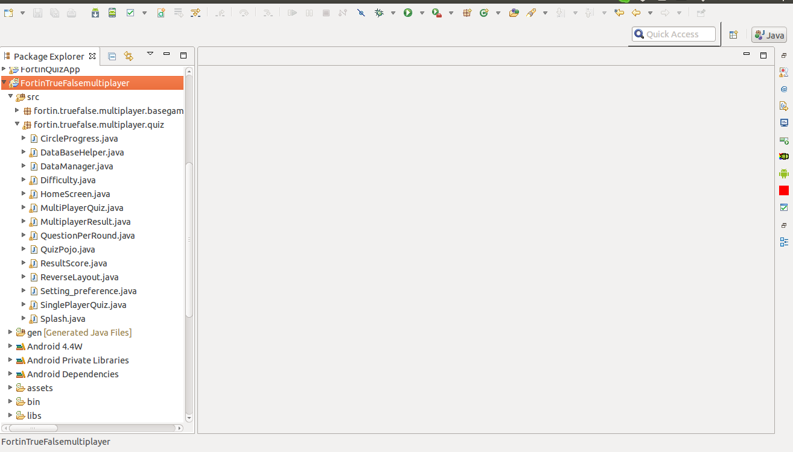
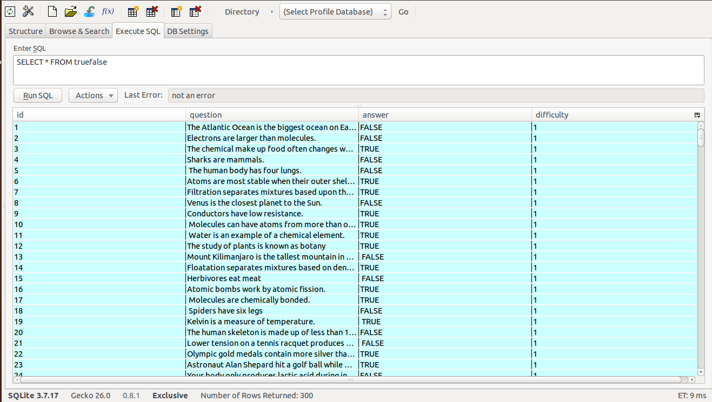

Created: 13/9/2014
By: Mayuri
Email: mayuri2411@gmail.com
Thank you for purchasing my Application. If you have any questions that are beyond the scope of this help file, please feel free to email via my user page contact form here. Thanks so much!
Fortin True Or False Quiz Application is Native Android based Quiz Application which is designed to provide amazing user experience while playing Quiz on your handsets. Application is super easy to use and customize. Now Improve your General Knowledge just by playing with your fingers at the same time Challange your Fried with Multiplayer Feature. Along with the documentation we have also added the PDF documentation for Google Leaderboard Integration Guide.
Following are the features of the quiz application
Following Image shows the basic folder structure of the application with Java files, when imported into Eclipse Integrated Development Environment.

The source code provided is an eclipse project and can be easily imported into eclipse. The folder Named 'FortinTrueFalsemultiplayer' contains all the required files for the Application which are required to import in eclipse.
Description of the Java files as follows, Please go through the same if you wish to go for risking and changing the application as per your need.
Splash.java - Splashscreen for 3 Seconds. Can be easily Customized just by changing the variable SPLASH_DURATION.
HomeScreen.java - This is the landing page of the Quiz application after Splash Screen. As soon as the Splash Screen goes off it will land to the Home screen. It has Various Options like Single Player, Multiplayer, Google Play Leader Board, Share App & Exit.
DataManager.java - This is the Java class where you can set Timer, which is the number of seconds you will be avail for each question. Right now its 16 seconds, You can change it as per your requirements.
Difficulty.java - This class is Activity Screen for Selecting Difficulty Level like Easy, Normal & Hard. In SQLite Database it is Defined as 1, 2 & 3 respectively.
QuestionPerRound.java - This class is Activity Screen for Selecting Number of Questions per Round like example 10, 20, 50.
QuizPojo.java - PoJo Class For Quiz Data like Questions, answers etc. in SQLite database.
DataBaseHelper.java - This Java Class will access to core SQLite database and has function defined to retrive data from database.
SinglePlayerQuiz.java - This Java Class corresponds to Screen for Single Player.
ResultScore.java - This Java class has methods which will show Scores for the Recently Played Single Player Game. It will also update scores on Google Leaderboard as per the difficulty level selected.
MultiPlayerQuiz.java - This Java Class corresponds to Screen for Multi Player.
MultiplayerResult.java - This Java class has methods which will show Scores for the Recently Played Multi Player Game. It will Show Results like Player 1 Wins or Player 2 Wins or Tie..
CircleProgress.java - This Java Class has the logic for Timer Progressbars used in the Application. you can customize as per your requirements.
SQLite Database is used for storing questions answers and the correct answers difficulty wise.
You will need to replace your database in Assets folder. Sample Database file is provided with application whith pre-populated 300 questions. This file is present in the Asset folder of the Application.

Following are the self explainatory Columns used in the database: ID, Question, Answer, Difficulty.
To customize the SQLite database handling, You can check database code in DatabaseHelper.java, It is very easy to understand and customisable.
We have added Admob (Banner) on each screen of application.
There is Full Screen StartApp Ad on Back button press, after quiz is played and between the quiz on 8th question.
You will need to import Google Play Service Library in your workspace and Add it as library in your project.
You can follow below link for the further help.
https://developers.google.com/mobile-ads-sdk/docs/
Layered PSDs are included with the Application, you can use and modify them as per your requirements.
Fonts which are used in the application are being placed in the asset folder. You can use this fonts as well as you can use your custom fonts as per your requirements.
You can use the various PNGs and graphic images provided in the drawable as per your requirements.
Once again, thank you so much for purchasing this Application. As I said at the beginning, I'd be glad to help you if you have any questions relating to this Application. No guarantees, but I'll do my best to assist. If you have a more general question relating to the Application on CodeCanyon, you might consider visiting the forums and asking your question in the "Item Discussion" section.
Mayuri